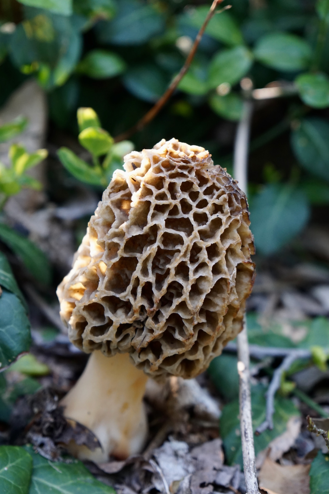

Black Trumpet

Formally known as Craterellus cornucopioides, this mushroom has a rich, nutty, and smoky taste
Penny Bun

Formally knows as Boletus edulis, this mushroom has a nutty flavor, distinct aroma, and creamy taste.
Chanterelle
This mushrooms favor profile balances earthiness, nuttiness, and a slight hint of fruity apricot.
Enoki
Formally known as Flammulina filiformis, this mushroom has an earthy but very fruity taste.
Yellow Morel
Formally known as Morchella esculenta, this mushroom has a earthy, nutty, woodsy, toaste taste.
Portobello
Formally known as Agaricus bisporus, this poppular mushroom has an earthly and distinctly meaty taste.
Shaggy Inkcap

Formally known as Coprinus comatus, this mushroom has a slightly bitter and nutty taste.
Shiitake
This common asian mushroom has a rich, meaty taste, and is also slightly sweet and smoky.
White Button
Formally known as Agaricus bisporus, this mushroom has a crisp and refreshing texture, and a mild flavor.